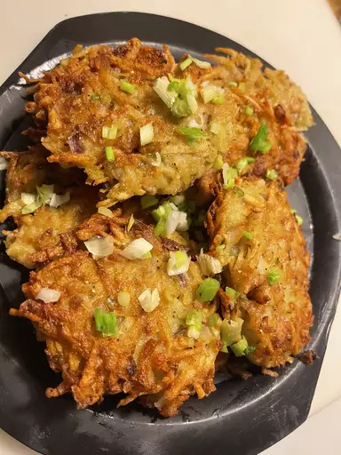

Crispy Hash Browns

Good, old-fashioned, restaurant-style hash browns. Perfect with hot pepper
sauce and ketchup!
Believe it or not, making crispy hash browns is actually quite easy.
First, shred your potatoes using your preferred method — either with a
grater, food processor, or mandoline. Rinse the potatoes until the water
is clear, then drain and squeeze out all the remaining liquid (this will
ensure the hash browns are extra crispy). Next, you'll add in your binding
agents (flour and egg) as well as any other ingredients or seasonings.
This recipe only calls for onion, but you could also add cheese, cayenne
pepper, or garlic to the mixture. Form your hash browns into patties
(either one large hash brown or multiple smaller pancake-like hash browns)
and pan fry them in oil, about five minutes on each side.
Ingredients
- 2 medium russet potatoes, shredded
- 1/2 medium onion, finely chopped
- 1/4 cup all-purpose flour
- 1 egg
- 1 cup oil for frying, or as needed
- salt and pepper to taste
Steps
-
Rinse shredded potatoes until water is clear, then drain and squeeze
dry. Place shreds in a bowl and mix in the onion, flour, and egg until
evenly distributed.
-
Heat about 1/4 inch of oil in a large heavy skillet over medium-high
heat. When oil is sizzling hot, place potatoes into the pan in a 1/2
inch thick layer. Cover the whole bottom of the pan, or make separate
piles like pancakes.
-
Cook until nicely browned on the bottom, then flip over and brown on the
other side. It should take at least 5 minutes per side. If you are
cooking them in one big piece, it can be cut into quarters for easier
flipping.
-
Remove from pan, and drain on paper towels. Season with salt and pepper
and serve immediately.